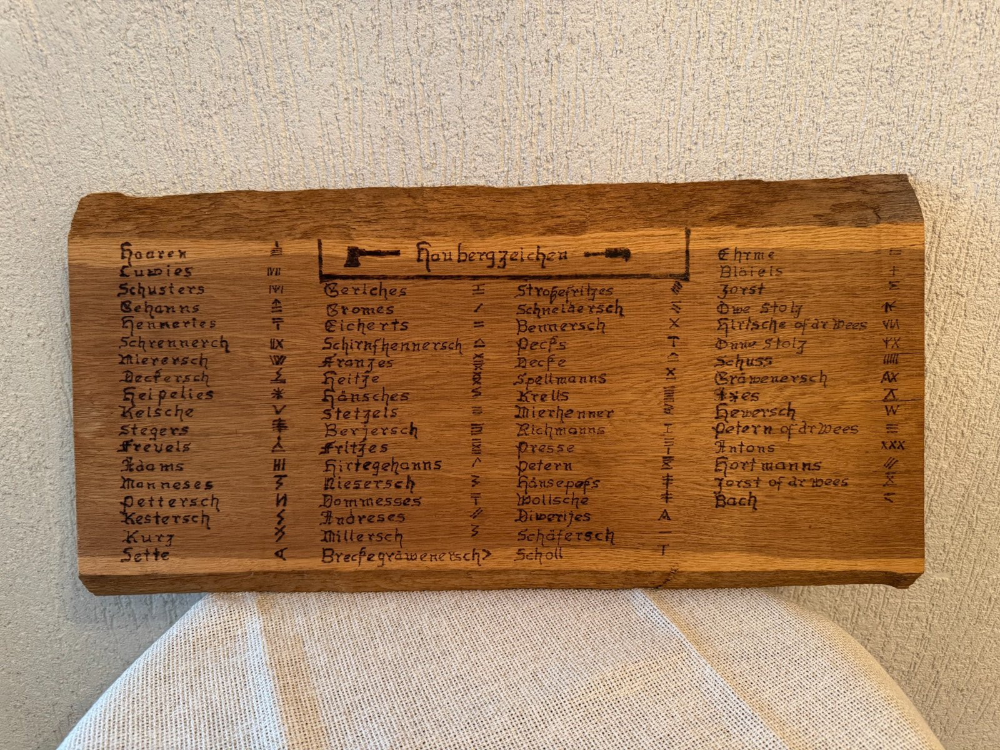

Gemeinschaftswald
Der Wald gehört den Anteilberechtigten gemeinschaftlich. Die Rechte an diesem Eigentum werden im Lagerbuch geführt.
Seit Generationen verbindet der Gemeinschaftswald die Menschen in Rudersdorf. Wir bewahren seine Geschichte und gestalten verantwortungsvoll seine Zukunft.
Die Waldgenossenschaft kennenlernenDie Waldgenossenschaft Rudersdorf vereint die Anteilberechtigten am Gemeinschaftswald. Sie organisiert dessen Verwaltung und Bewirtschaftung und vertritt die gemeinsamen Interessen ihrer Mitglieder.
Der Wald gehört den Anteilberechtigten gemeinschaftlich. Die Rechte an diesem Eigentum werden im Lagerbuch geführt.
Die Genossenschaftsversammlung ist das oberste beschließende Organ. Der Vorstand übernimmt die laufende Verwaltung.
Holznutzung, Waldpflege und die langfristige Entwicklung des Bestandes gehören zu den Herausforderungen gemeinschaftlicher Waldbewirtschaftung.
Die Haubergswirtschaft hat das Siegerland über Jahrhunderte geprägt. Holz, Eichenlohe und zeitweise der Anbau von Getreide auf den Haubergsflächen waren wichtige Bestandteile der früheren Nutzung.
Auch in Rudersdorf hat diese Tradition deutliche Spuren hinterlassen. Heute stehen neben der Holznutzung insbesondere Waldpflege und Wiederbewaldung im Mittelpunkt.
Die Chroniken berichten von Pflanzungen verschiedener Baumarten sowie von großen Herausforderungen durch Sturm, Trockenheit und Borkenkäfer.

Die überlieferten Chroniken erzählen von der Arbeit der Haubergsgenossenschaft, vom Wandel der Forstwirtschaft und vom Einsatz vieler Generationen für den Rudersdorfer Wald.
Die historische Haubergschronik hält Waldarbeit, Nutzungen, Schäden, Wiederaufforstung und das Leben rund um den Gemeinschaftswald fest.
Mit dem Gemeinschaftswaldgesetz NRW beginnt eine neue rechtliche Grundlage. Die Rudersdorfer Satzung beschreibt Zweck, Organe und Verwaltung der Waldgenossenschaft.
Trockenheit und Borkenkäfer haben viele Fichtenbestände schwer geschädigt. Die jüngere Chronik dokumentiert die Wiederbepflanzung mit vielfältigen Baumarten.
Historische Angaben beruhen auf den vorhandenen Chroniken und dem Heimatbuch „Unser Rudersdorf“ (1984). Jahreszahlen bezeichnen dokumentierte Zeiträume, nicht das Gründungsjahr der Genossenschaft.
Der vertretungsberechtigte Vorstand gemäß Bescheinigung des Landesbetriebs Wald und Holz Nordrhein-Westfalen vom 17. November 2026:
Waldgenossenschaft Rudersdorf · 57234 Wilnsdorf
Für Fragen zur Waldgenossenschaft oder zu Mitgliedsangelegenheiten.